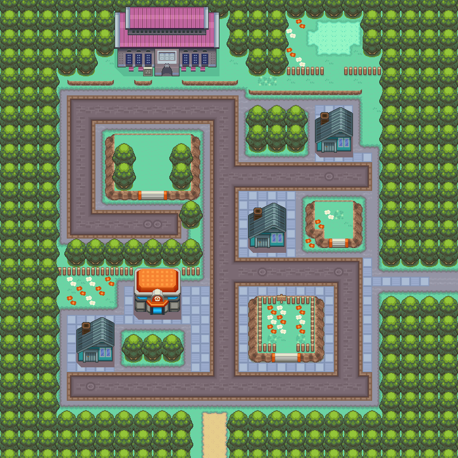

扔出去用来收服野生宝可梦的球， 设计成胶囊状。
获取：常青市·商店 ／ 尼比市·商店 ／ 华蓝市·商店 ／ 枯叶市·商店 ／ 烟墨市·商店 ／ 石英高原·商店 ／ 吉野市·商店 ／ 桔梗市·商店 ／ …等 23 处
标价 200 口袋：精灵球
/4
shop:0816A289:0:5:3
shop:0816A6F6:0:6:3
shop:0816ACC6:0:7:7
shop:0816B67C:0:9:5
shop:089C7965:0:31:2
shop:089C7965:0:34:3
shop:089C7965:0:45:1
shop:089C7965:0:46:3
shop:089C7965:0:47:4
shop:089C7965:0:48:7
shop:089C7965:0:49:11
shop:089C7970:0:31:2
shop:089C7970:0:34:3
shop:089C7970:0:45:1
shop:089C7970:0:46:3
shop:089C7970:0:47:4
shop:089C7970:0:48:7
shop:089C7970:0:49:11
shop:089C797B:0:31:2
shop:089C797B:0:34:3
shop:089C797B:0:45:1
shop:089C797B:0:46:3
shop:089C797B:0:47:4
shop:089C797B:0:48:7
shop:089C797B:0:49:11
shop:089C7986:0:31:2
shop:089C7986:0:34:3
shop:089C7986:0:45:1
shop:089C7986:0:46:3
shop:089C7986:0:47:4
shop:089C7986:0:48:7
shop:089C7986:0:49:11
shop:089C7991:0:31:2
shop:089C7991:0:34:3
shop:089C7991:0:45:1
shop:089C7991:0:46:3
shop:089C7991:0:47:4
shop:089C7991:0:48:7
shop:089C7991:0:49:11
shop:089C799C:0:31:2
shop:089C799C:0:34:3
shop:089C799C:0:45:1
shop:089C799C:0:46:3
shop:089C799C:0:47:4
shop:089C799C:0:48:7
shop:089C799C:0:49:11
shop:089C79A7:0:31:2
shop:089C79A7:0:34:3
shop:089C79A7:0:45:1
shop:089C79A7:0:46:3
shop:089C79A7:0:47:4
shop:089C79A7:0:48:7
shop:089C79A7:0:49:11
shop:089C79B2:0:31:2
shop:089C79B2:0:34:3
shop:089C79B2:0:45:1
shop:089C79B2:0:46:3
shop:089C79B2:0:47:4
shop:089C79B2:0:48:7
shop:089C79B2:0:49:11
shop:089C79BD:0:31:2
shop:089C79BD:0:34:3
shop:089C79BD:0:45:1
shop:089C79BD:0:46:3
shop:089C79BD:0:47:4
shop:089C79BD:0:48:7
shop:089C79BD:0:49:11
shop:089EB937:0:50:16
shop:089EB942:0:50:16
shop:089EB94D:0:50:16
shop:089EB958:0:50:16
shop:089EB963:0:50:16
shop:089EB96E:0:50:16
shop:089EB983:0:50:16
shop:089EB98E:0:50:16
shop:089EB9A8:0:50:16
shop:08AAB01F:0:53:2
hidden:1:125:0
hidden:3:2:5
hidden:3:68:5
hidden:3:68:6
script_item_candidate:08169780:43:6
script_item_candidate:08169780:4:3
script_item_candidate:08169A4D:43:6
script_item_candidate:08169A4D:4:3
script_item_candidate:std:081BE5B2:1:0
script_item_candidate:std:089C0D27:43:0
script_item_candidate:std:089C1117:43:0
script_item_candidate:std:089C673E:3:79
script_item_candidate:std:089C6C5B:3:79
script_item_candidate:std:089C74CE:3:80
reference/SAVE_HOME_GAME_DATA.json.charmap
共享RGB底图；点击可缩放定位。数字对应本页相关地点，不代表地图上全部事件。
1 精灵球（2,3）
放大定位与查看相邻入口 →
1 精灵球（1,3）
1 精灵球（1,5）
1 精灵球（22,6）
1 精灵球（5,2）
1 精灵球（17,9）

1 精灵球（10,6）
1 精灵球（0,1）；2 精灵球（41,18）
1 精灵球（12,8）
1 精灵球（1,0） 底图有1个图块缺少原始数据。
1 精灵球（5,41）
地图范围记录：当前资料没有精确人物／遭遇坐标。
1 精灵球（剧情触发区，1格）；2 精灵球（剧情触发区，1格）
1 精灵球（25,20）